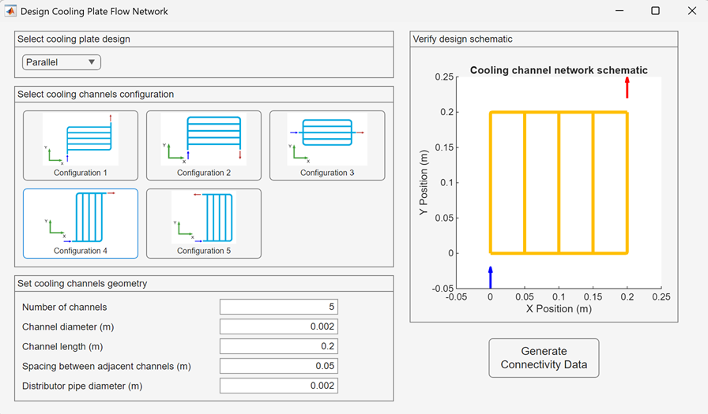

Connectivity Data Structure for Cooling Plate Flow Networks
This documentation describes the ConnectivityData structure used to represent the topology (components and their connections) and the geometry (positions, diameters, and optional centerlines) of a battery cooling plate flow network. You can use ConnectivityData to generate a Simscape™ model of the flow network or to drive analysis and design tools.
The structure supports common component types—straight pipes, bends, sources, and sinks—and a consistent way to define which ports are connected between components.
Contents
Syntax
ConnectivityData(k).Component = <string> ConnectivityData(k).Connectivity.portAName = <string> ConnectivityData(k).Connectivity.portBName = <string> ConnectivityData(k).Connectivity.portHName = <string> ConnectivityData(k).Connectivity.portAConnectedComponent = <string> ConnectivityData(k).Connectivity.portBConnectedComponent = <string> ConnectivityData(k).Connectivity.portAConnectedPort = <string> ConnectivityData(k).Connectivity.portBConnectedPort = <string> ConnectivityData(k).Connectivity.portHConnected = "yes"|"no" ConnectivityData(k).Parameters.position = simscape.Value([x1 y1 x2 y2],"m") ConnectivityData(k).Parameters.diameter = simscape.Value(d,"m") % Optional for bends and curved segments: ConnectivityData(k).Parameters.centerlinePts = simscape.Value([x y; ...],"m")
Description
A ConnectivityData array is an ordered list of component definitions. Each element k describes one component:
- Its type and name ('Component'),
- How its ports connect to other components ('Connectivity' substructure),
- Its geometry and physical sizing parameters ('Parameters' substructure).
The structure is independent of solver or block specifics, making it easy to generate Simscape models programmatically from the same data.
In a typical parallel-channel design, horizontal pipes carry the coolant left-to-right across the plate, vertical pipes or bends interconnect channels, and the Source/Sink provide inlet and outlet boundary conditions.
Component Types
The following component types are commonly used:
- PipeN — Straight pipe segment (N is any unique identifier).
- BendN — Curved pipe segment connecting two orthogonal directions.
- Source — Inlet boundary component (e.g., reservoir or pump outlet).
- Sink — Outlet boundary component (e.g., reservoir or pump inlet).
Naming: Component must be a unique string for each element in the array. References in connectivity fields must match these names exactly.
Ports and Connectivity
Each component defines up to three ports:
- A and B — Fluid ports (required for Pipes and Bends).
- H — Thermal/heat port (optional, set connectivity via portHConnected ).
The 'Connectivity' substructure declares port names and the peer connections. Port name strings are typically:
- Connectivity.portAName = "A"
- Connectivity.portBName = "B"
- Connectivity.portHName = "H"
For fluid connections, specify the peer component name and the peer port name:
- Connectivity.portAConnectedComponent — Name of the component connected to this component's A port.
- Connectivity.portAConnectedPort — Peer port name (commonly "A" or "B" on the peer component).
- Connectivity.portBConnectedComponent — Name of the component connected to this component's B port.
- Connectivity.portBConnectedPort — Peer port name on the peer component.
For thermal/heat port connectivity:
- Connectivity.portHConnected — "yes" to include and connect the heat port in the generated model, "no" to omit.
Notes: * Use consistent port name capitalization. By convention, fluid ports are "A" and "B". If your block library uses different names, keep them consistent across all components. * Connections are logical declarations; downstream tooling will create lines between the referenced ports when building the Simscape model.
Geometry and Physical Parameters
Geometry lives under the 'Parameters' substructure.
- Parameters.position — A 4-element vector wrapped in simscape.Value that defines the start and end coordinates of the component centerline:
* [x1 y1 x2 y2] in meters ("m").
* For a straight pipe: a single straight segment from (x1,y1) to
(x2,y2).
* For a bend: still specify the two end points; use
*Parameters.centerlinePts* to define the arc between them.
- Parameters.diameter — Inner hydraulic diameter of the pipe or bend, provided as a scalar simscape.Value(d,"m").
Optional (bends or curved segments):
- Parameters.centerlinePts — An N-by-2 array of centerline points [x y] (meters), wrapped in simscape.Value(...,"m"). This overrides the implicit straight segment between (x1,y1) and (x2,y2) and is used to define curved geometry (e.g., elbows). You can generate these points using a helper (e.g., generateBendPts).
Units: All geometric quantities must be simscape.Value(...,"m") so the Simscape model can perform unit-consistent calculations.
Field Reference
Top-level: * *ConnectivityData(k).Component* — (string) Unique component name.
Connectivity:
- Connectivity.portAName — (string) Local fluid port A name, typically "A" .
- Connectivity.portBName — (string) Local fluid port B name, typically "B" .
- Connectivity.portHName — (string) Local heat port name, typically "H" .
- Connectivity.portAConnectedComponent — (string) Peer component name connected to local A.
- Connectivity.portAConnectedPort — (string) Peer port name on the peer component.
- Connectivity.portBConnectedComponent — (string) Peer component name connected to local B.
- Connectivity.portBConnectedPort — (string) Peer port name on the peer component.
- Connectivity.portHConnected — ( "yes" | |"no"| ) Whether the heat port is present and connected.
Parameters:
- Parameters.position — (simscape.Value) [x1 y1 x2 y2] in meters.
- Parameters.diameter — (simscape.Value) Scalar inner diameter in meters.
- Parameters.centerlinePts — (simscape.Value) Optional [x y] points in meters for curved geometry.
Minimal Example
The following example illustrates the smallest valid definitions for common components.
Straight vertical pipe (along Y-axis) at X = 0 m level
ConnectivityData(1).Component = "Pipe1"; ConnectivityData(1).Connectivity.portAName = "A"; ConnectivityData(1).Connectivity.portBName = "B"; ConnectivityData(1).Connectivity.portHName = "H"; ConnectivityData(1).Connectivity.portHConnected = "yes"; ConnectivityData(1).Connectivity.portAConnectedComponent = "Source"; ConnectivityData(1).Connectivity.portAConnectedPort = "A"; ConnectivityData(1).Connectivity.portBConnectedComponent = "Bend1"; ConnectivityData(1).Connectivity.portBConnectedPort = "A"; ConnectivityData(1).Parameters.position = simscape.Value([0 0 0 0.1980],"m"); ConnectivityData(1).Parameters.diameter = simscape.Value(0.002,"m");
Straight vertical pipe (along Y-axis) at X = 0.05 m level
ConnectivityData(2).Component = "Pipe2"; ConnectivityData(2).Connectivity.portAName = "A"; ConnectivityData(2).Connectivity.portBName = "B"; ConnectivityData(2).Connectivity.portHName = "H"; ConnectivityData(2).Connectivity.portHConnected = "yes"; ConnectivityData(2).Connectivity.portAConnectedComponent = "Bend2"; ConnectivityData(2).Connectivity.portAConnectedPort = "A"; ConnectivityData(2).Connectivity.portBConnectedComponent = "Sink"; ConnectivityData(2).Connectivity.portBConnectedPort = "A"; ConnectivityData(2).Parameters.position = simscape.Value([0.0500 0.0020 0.0500 0.2000],"m"); ConnectivityData(2).Parameters.diameter = simscape.Value(0.002,"m");
Straight horizontal pipe (along X-axis) from Source (inlet) to Bend2
ConnectivityData(3).Component = "Pipe3"; ConnectivityData(3).Connectivity.portAName = "A"; ConnectivityData(3).Connectivity.portBName = "B"; ConnectivityData(3).Connectivity.portHName = "H"; ConnectivityData(3).Connectivity.portHConnected = "yes"; ConnectivityData(3).Connectivity.portAConnectedComponent = "Source"; ConnectivityData(3).Connectivity.portAConnectedPort = "A"; ConnectivityData(3).Connectivity.portBConnectedComponent = "Bend2"; ConnectivityData(3).Connectivity.portBConnectedPort = "A"; ConnectivityData(3).Parameters.position = simscape.Value([ 0 0 0.0480 0],"m"); ConnectivityData(3).Parameters.diameter = simscape.Value(0.002,"m");
Straight horizontal pipe (along X-axis) from Bend1 to Sink (outlet)
ConnectivityData(4).Component = "Pipe4"; ConnectivityData(4).Connectivity.portAName = "A"; ConnectivityData(4).Connectivity.portBName = "B"; ConnectivityData(4).Connectivity.portHName = "H"; ConnectivityData(4).Connectivity.portHConnected = "yes"; ConnectivityData(4).Connectivity.portAConnectedComponent = "Bend1"; ConnectivityData(4).Connectivity.portAConnectedPort = "A"; ConnectivityData(4).Connectivity.portBConnectedComponent = "Sink"; ConnectivityData(4).Connectivity.portBConnectedPort = "A"; ConnectivityData(4).Parameters.position = simscape.Value([0.0020 0.2000 0.0500 0.2000],"m"); ConnectivityData(4).Parameters.diameter = simscape.Value(0.002,"m");
Clockwise bend connecting Pipe1 and Pipe4
ConnectivityData(5).Component = "Bend1"; ConnectivityData(5).Connectivity.portAName = "A"; ConnectivityData(5).Connectivity.portBName = "B"; ConnectivityData(5).Connectivity.portHName = "H"; ConnectivityData(5).Connectivity.portHConnected = "yes"; ConnectivityData(5).Connectivity.portAConnectedComponent = "Pipe1"; ConnectivityData(5).Connectivity.portAConnectedPort = "A"; ConnectivityData(5).Connectivity.portBConnectedComponent = "Pipe4"; ConnectivityData(5).Connectivity.portBConnectedPort = "A"; ConnectivityData(5).Parameters.position = simscape.Value([0 0.1980 0.0020 0.2000],"m"); % Generate centerline points (helper function not shown): bend1Pts = generateBendPts([0 0.1980],[0.0020 0.2000],0.002,"CW"); ConnectivityData(5).Parameters.centerlinePts = simscape.Value(bend1Pts,"m"); ConnectivityData(5).Parameters.diameter = simscape.Value(0.002,"m");
Counter-clockwise bend connecting Pipe3 and Pipe2
ConnectivityData(6).Component = "Bend2"; ConnectivityData(6).Connectivity.portAName = "A"; ConnectivityData(6).Connectivity.portBName = "B"; ConnectivityData(6).Connectivity.portHName = "H"; ConnectivityData(6).Connectivity.portHConnected = "yes"; ConnectivityData(6).Connectivity.portAConnectedComponent = "Pipe3"; ConnectivityData(6).Connectivity.portAConnectedPort = "A"; ConnectivityData(6).Connectivity.portBConnectedComponent = "Pipe2"; ConnectivityData(6).Connectivity.portBConnectedPort = "A"; ConnectivityData(6).Parameters.position = simscape.Value([0.0480 0 0.0500 0.0020],"m"); % Generate centerline points (helper function not shown): bend2Pts = generateBendPts([0.0480 0],[0.0500 0.0020],0.002,"CCW"); ConnectivityData(6).Parameters.centerlinePts = simscape.Value(bend2Pts,"m"); ConnectivityData(6).Parameters.diameter = simscape.Value(0.002,"m");
Creating a ConnectivityData from Scratch (Step-by-Step)
1. Plan your topology (paper sketch or CAD): list every segment (pipes, bends) and the inlet/outlet components (Source, Sink).
2. Assign unique names to all components. Example: "Pipe1"..."PipeN", "Bend1"..."BendM", "Source", "Sink".
3. Define geometry for each component: * For straight pipes, set Parameters.position = simscape.Value([x1 y1 x2 y2],"m"). * For bends, set position to the endpoints and provide Parameters.centerlinePts = simscape.Value([x y; ...],"m"). * Choose `Parameters.diameter = simscape.Value(d,"m")` consistently across segments unless you intentionally vary it.
4. *Declare ports (`A`, `B`, and optionally `H`) and **connectivity*: * For each component, fill `portAConnectedComponent` and `portAConnectedPort` with the peer component name and port. * Likewise for `B`. Ensure graph consistency (every connection appears once on each side, unless connecting to a boundary component). * Set `portHConnected = "yes"` if you intend to model heat transfer.
5. *Validate connectivity*: * Every referenced component must exist in `ConnectivityData`. * Port names must match on both connected sides (e.g., A↔B). * No dangling fluid ports unless deliberately used for boundaries.
6.(Optional) Generate bends automatically**: * Use a helper such as `generateBendPts(startXY, endXY, radius, sense)` to create smooth centerline arcs; wrap the result with `simscape.Value(...,"m")`.
7. *Apply global defaults*: * It is common to assign a uniform diameter across all components:
for k = 1:numel(ConnectivityData)
ConnectivityData(k).Parameters.diameter = simscape.Value(0.002,"m");
end
Creating a ConnectivityData Using Interactive Design Tool
To create a connectivity data structure interactively, use the design tool provided with the project. This tool enables you to configure a cooling plate flow network without manually defining each component and connection. The tool streamlines the design process and allows rapid evaluation of design alternatives compared to manual creation of the ConnectivityData structure.
Syntax
ConnectivityData = designCoolingPlateFlowNetwork
Description
The function `designCoolingPlateFlowNetwork` launches an interactive figure-based tool that guides you through the steps of designing a cooling plate flow network. The tool supports multiple design types and channel configurations, and automatically generates a valid ConnectivityData structure based on your selections.
How to Launch
To launch the tool, ensure that the project is loaded, then enter the following command at the MATLAB® command prompt:
ConnectivityData = designCoolingPlateFlowNetwork;
The tool opens in a figure window with panels for selecting design type, channel configuration, and geometry parameters. To know more, see Design a Battery Cooling Plate Flow Network.

Notes and Best Practices
- *Units:* Always use `simscape.Value` with `"m"` for geometry to maintain unit consistency.
- *Orientation:* The coordinate system is user-defined. Typical usage sets X to the right and Y upward (or as per your plate layout). Keep it consistent across the design.
- *Heat Port (`H`):* If the associated Simscape components include a thermal port, set `portHConnected = "yes"` to enable connections to the thermal network; otherwise set `"no"`.
- *Component Names:* Use simple, unique names and avoid spaces to ease programmatic processing.
- *Curved Geometry:* Prefer centerline point sets for bends to avoid ambiguity in curvature and to improve geometric fidelity.